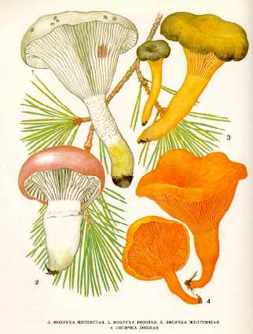

1. МОКРУХА ПЯТНИСТАЯ.
Встречается в хвойных и смешанных лесах. Растет
небольшими группами. Плодоносит в июле — сентябре.
Шляпка 3—6 см в диаметре, сначала коническая,
затем плоско-выпуклая, серовато-охристая, с темными пятнами, очень слизистая. Мякоть
молодого гриба беловатая, на разрезе краснеющая, к старости коричневатая, без особого
вкуса и запаха.
Пластинки слегка нисходящие по ножке, толстые,
сначала светло-серые, затем чернеющие. Споровый порошок коричневый. Споры вере-теновидные.
Ножка 5—8 см длины, 0,6—
Съедобный гриб четвертой категории. Употребляется свежим, соленым,
маринованным.
2. МОКРУХА РОЗОВАЯ.
Растет в хвойных, преимущественно сосновых лесах,
встречается редко в августе — сентябре.
Шляпка небольшая — до
Пластинки слегка нисходящие по ножке, толстые,
редкие, у молодых грибов светло-серо-оливковые, у зрелых
— почти черные.
Споровый порошок темный. Споры веретеновидные.
Ножка до
Условно съедобный гриб четвертой категории. Употребляется свежим.
3. ЛИСИЧКА ЖЕЛТЕЮЩАЯ.
Встречается преимущественно в еловых лесах. Плодоносит
в августе — сентябре. Растет группами по нескольку десятков экземпляров.
Шляпка 2—5 см в диаметре, воронковидная, часто
трубчатая до самого основания, тонкая, эластичная, сухая, желтовато-коричневая.
Мякоть светло-желтая, слегка резинистая, без особого вкуса
и запаха.
Пластинки нисходящие по ножке, тонкие, извилистые, желтые или оранжевые,
затем серые. Споровый порошок белый. Споры эллипсоидные.
Ножка 5—10 см длины, до
Съедобный гриб четвертой категории. Употребляется свежим, пригоден для сушки.
4. ЛИСИЧКА ЛОЖНАЯ. КОКОШКА.
Растет большими группами и единично преимущественно в хвойных лесах, на сосновых пнях и стволах. Встречается и в широколиственных лесах в июле и августе.
Шляпка воронковидная, мясистая, с завернутым
краем. В диаметре от 2 до
Пластинки такой же окраски, как и шляпка, частые, разветвленные, спускающиеся на ножку. Споровый порошок белый.
Ножка
Мякоть розовато-желтая, толстая в центре.
Относится к малоизвестным съедобным грибам. После отваривания пригоден к употреблению.